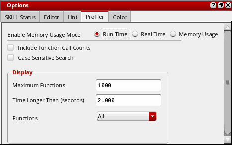
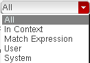

Setting Profiler Options
Use the options in the Profiler tab to define the type of data you want the Profiler to collect and display.
Profiler Options for Data Collection
To set the profiler options for collecting data, before running the Profiler, do the following:
-
Choose Options – Profiler. You can also click
 (Profiler Options) in the toolbar displayed in the Profiler assistant window. The Options assistant displays with Profiler as the default tab.
(Profiler Options) in the toolbar displayed in the Profiler assistant window. The Options assistant displays with Profiler as the default tab.

- In the Enable Memory Usage Mode section, select one of the following options to indicate the mode in which the time should be measured.
- Select the Include Function Call Counts check box to view the number of times a function is called in your SKILL program.
Profiler Options for Data Viewing
After you have finished running the Profiler on your SKILL code, the fields in the Display area become enabled as shown in the following figure. These fields let you set the display properties for viewing the collected data.

To set the Profiler Options for viewing data, set the following options in the Display area:
- Select the Case Sensitive Search check box to match the case of the searched function in the profiler summary report.
- In the Maximum Functions field, type the maximum number of functions you want to see. This field is disabled when you select the Tree View tab in the Profiler assistant pane.
-
Depending on the profiler mode currently selected, one of the following fields is displayed:
- Time Longer Than (seconds): This field is displayed when you run the profiler in time mode. Type the minimum number of seconds that should be spent in a function for its information to appear in the summary.
-
Memory Larger Than (bytes): This field is displayed when you run the profiler in memory mode. Type the minimum number of bytes of memory a function has to have allocated in order for its information to appear in the summary.
These fields are disabled when you select the Tree View tab in the Profiler assistant pane.
-
Select one of the following options from the Functions drop-down:
- All to display all functions in the profiler window.
- In context to display only the functions in the given context.
- Match Expression to display only those functions that match the given regular expression.
- Match Prefix to display only those functions who prefix match the specified.
- User to display user functions, that is, functions that are neither binary nor write-protected.
- System to display non-user binary SKILL functions.
If you select the In context, Match Expression, or Match Prefix options, a combo box appears below the Functions drop-down. Specify an appropriate context name, regular expression, or prefix name in the box and press Enter.
Related Topics
Controls Available on the Profiler Summary Report
Return to top